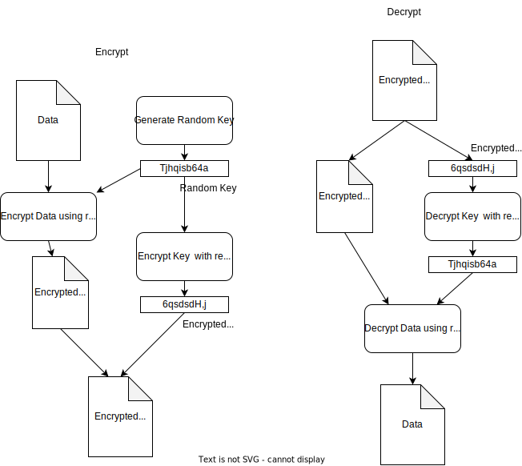

Introduction
Why did this book exist ?
How to recreate this book
Install rust
Install mdbook with cargo
Activate Github actions
In your github repository, go to settings, pages. select : Deploy from branch, <your_branch>, and docs folder
Build current markdown to Html
You can use some makefile targets to:
- locally serve the book
make serve
- build html/js in docs folder
make build
Go, Golang
My doc
Be carefull, not always up to date.
- %s – Print a string.
- %d – print an integer
- %f – floating point number.
- %v – print values of a struct.
- %+v – print struct fields and values.
- %t – print Boolean.
- %b – print binary value.
- %e – scientific notation
PPROF
pprof pprof is a tool for visualization and analysis of profiling data.
Analyse web server
Add this to you program
package main
import _ "net/http/pprof"
import "net/http"
func main() {
go func() {
_ = http.ListenAndServe("localhost:6060", nil)
}()
// your code
}
Then you can make an http call to localhost:6060
RAM profiling
A little info: In order to analyze the currently used memory, just select the inuse indices (bytes or object counts):
- inuse_space: memory allocated but not yet released
- inuse_objects: objects allocated but not yet released
If you are interested in understanding the total amount of bytes or objects, use the alloc indices instead:
- alloc_space: the total amount of memory allocated
- alloc_objects : the total number of objects allocated
flat: the memory allocated and held by this function cum: the memory allocated by this function together with functions that it has called
Ok let's get some info ! Retrieve inuse_space: (by default --inuse_space you can forget it)
go tool pprof --inuse_space -top http://localhost:6060/debug/pprof/heap
go tool pprof -png http://localhost:6060/debug/pprof/heap > ram.png
Retrieve alloc_space
go tool pprof --alloc_space -top http://localhost:6060/debug/pprof/heap
CPU profiling
go tool pprof -png "http://localhost:6060/debug/pprof/profile?seconds=5" >cpu.png
In test
https://wablesushmita.medium.com/cpu-memory-profiling-with-golang-pprof-3deddbd7b964
go test -cpuprofile cpu.prof -memprofile mem.prof
go tool pprof cpu.prof
go tool pprof cpu.prof
go-torch generate svg
Rust
My doc
Be carefull, not always up to date.
Intro to ownership - borrow-checker
Ownership
It's really simple to try and create compiler error because of the ownership system in rust !
Let's says we have a simple hello world program:
fn print_string(s: String) { println!("{}", s); } fn main() { let s = String::from("hello"); print_string(s); }
The code declare a string, a transmit this string to the function print_string
Now let's says we want to call two times the print_string function
fn print_string(s: String) { println!("{}", s); } fn main() { let s = String::from("hello"); print_string(s); print_string(s); }
This code does not compile. The compiler says two things:
- move occurs because
shas typeString, which does not implement theCopytrait - note: consider changing this parameter type in function
print_stringto borrow instead if owning the value isn't necessary
Copy trait ? borrow instead if owning ? Ok let's take a step back.
In Rust, every value has a variable that's called its owner. There can only be one owner at a time, and when the owner goes out of scope, the value is dropped.
the value is dropped ?
When a value is "dropped", it means that the memory allocated for that value is freed. Each value has a unique owner, and when the owner goes out of scope, the value is dropped and its memory is freed.
Dropping a value means that the destructor of that value is called. The destructor is responsible for cleaning up any resources that the value might be holding, such as closing file handles or freeing memory.
fn main() { let s = String::from("hello"); println!("{}", s); }
In this code, s is the owner of the string "hello". When s goes out of scope at the end of the main function, the memory used to store the string is automatically returned to the system.
When you pass a value to a function, ownership of the value is transferred to the function. For example:
fn print_string(s: String) { println!("{}", s); } fn main() { let s = String::from("hello"); print_string(s); }
In this code, ownership of the string "hello" is transferred to the print_string function when it's called. The function takes ownership of the string and then returns ownership to the system when it goes out of scope. So the memory of s is dropped at the end of print_string function.
In Rust, we can implement the Drop trait to execute some code when a value is dropped. Here's an example:
struct MyStruct { name: String, } impl MyStruct { fn new(name: &str) -> Self { MyStruct { name: String::from(name), } } } impl Drop for MyStruct { fn drop(&mut self) { println!("MyStruct instance with name '{}' dropped", self.name); } } fn main() { let _s = MyStruct::new("example"); // `_s` will be dropped at the end of this scope println!("End of main function"); }
You should see in output
End of main function
MyStruct instance with name 'example' dropped
Now let's tweak the main function and give the ownership of _s to a print_string function
struct MyStruct { name: String, } impl MyStruct { fn new(name: &str) -> Self { MyStruct { name: String::from(name), } } } fn print_string(s: MyStruct) { println!("{}", s.name); } impl Drop for MyStruct { fn drop(&mut self) { println!("MyStruct instance with name '{}' dropped", self.name); } } fn main() { let _s = MyStruct::new("example"); // `s` will be dropped at the end of this scope print_string(_s); println!("End of main function"); }
You should see:
example
MyStruct instance with name 'example' dropped
End of main function
So you can clearly see when the MyStruct _s is dropped and why we can't call two times
print_string function
Clone
Remember when the compiler says this:
- move occurs because
shas typeString, which does not implement theCopytrait
If you look at what the compiler says it also tell us that: help: consider cloning the value if the performance cost is acceptable | 7 | print_string(s.clone());
fn print_string(s: String) { println!("{}", s); } fn main() { let s = String::from("hello"); print_string(s.clone()); print_string(s); }
Here the first print_string take the ownership of a deep copy of the string s let's says s', and the second print_string take the ownership of s
Borrow
Compiler friend also tell us:
- note: consider changing this parameter type in function
print_stringto borrow instead if owning the value isn't necessary
You can also pass ownership of a value to a function temporarily using references. For example:
fn print_string(s: &String) { println!("{}", s); } fn main() { let s = String::from("hello"); print_string(&s); }
In this code, a reference to the string is passed to the print_string function instead of the value itself. The function can use the value of the string, but ownership remains with the caller.
If i go back to my code with Drop trait and change the print_function to borrow the ownership:
struct MyStruct { name: String, } impl MyStruct { fn new(name: &str) -> Self { MyStruct { name: String::from(name), } } } fn print_string(s: &MyStruct) { println!("{}", s.name); } impl Drop for MyStruct { fn drop(&mut self) { println!("MyStruct instance with name '{}' dropped", self.name); } } fn main() { let _s = MyStruct::new("example"); // `s` will be dropped at the end of this scope print_string(&_s); println!("End of main function"); }
output:
example
End of main function
MyStruct instance with name 'example' dropped
_s var keep the ownership, print_function only borrow the memory and this memory will be drop at the end of the scope of the main function.
Example of borrow-checker - ownership case
Iterate HashMap and update value
Iterate over a HashMap and modify the values, but you need to be careful because Rust's borrow checker will prevent you from doing so in certain situations.
One way to modify values in a HashMap while iterating over it is to use the HashMap::entry method to get a mutable reference to the value, and then modify the value using the mutable reference.
Ok let's say i want to iterate through a map, here is a naive solution:
This will no work in rust, you can launch this code here in this browser and see the error:
use std::collections::HashMap; fn main() { let mut my_map = HashMap::new(); my_map.insert("foo", 1); my_map.insert("bar", 2); for (k, v) in my_map { my_map[k] = v + 1; } println!("{:?}", my_map); }
As you can see with for (key, value) in my_map the ownership of my_map is moved due to the implicit call to .into_iter() with the for ... in statement.
Then
You can also see that HashMap<&str, i32>, which does not implement the Copy trait.
Indeed if we could copy the hashmap we could iter throught the first and update the new one.
So how can we do our stuff ?
use std::collections::HashMap;
use std::collections::HashMap; fn main() { let mut my_map = HashMap::new(); my_map.insert("foo", 1); my_map.insert("bar", 2); for (_k, v) in my_map.iter_mut() { *v += 1; } println!("{:?}", my_map); }
In this example, we first create a HashMap and insert two key-value pairs into it. Then, we use the iter_mut method to iterate over the map's values, getting mutable references to each value. We can then modify each value using the mutable reference.
Note that we use the * operator to dereference the mutable reference and modify the value it points to.
We can create a new HashMap with the modified key-value pairs and replace the old HashMap with the new one.
Here's an example:
use std::collections::HashMap; fn main() { let mut my_map = HashMap::new(); my_map.insert("foo", 1); my_map.insert("bar", 2); let new_map: HashMap<_, _> = my_map .into_iter() .map(|(key, mut value)| { if key.starts_with("b") { value += 1; } (key, value) }) .collect(); println!("{:?}", new_map); }
In this example, we use into_iter to consume the original HashMap and create a new one with modified key-value pairs. The closure passed to map takes ownership of each key-value pair, and modifies the value if the key starts with the letter "b". Finally, collect is called to create a new HashMap from the modified key-value pairs.
Booooo ! Way to slow with large Map! 😈😈
Note that this approach creates a new HashMap, so if the original HashMap is large, it may not be the most efficient solution. If efficiency is a concern, you can use a mutable HashMap and modify the values in place using HashMap::entry.
You can modify the HashMap in place using the HashMap::retain method. The retain method takes a closure that operates on the key-value pairs of the HashMap and removes any pairs for which the closure returns false.
use std::collections::HashMap; fn main() { let mut my_map = HashMap::new(); my_map.insert("foo", 1); my_map.insert("bar", 2); my_map.retain(|key, value| { *value += 1; key.starts_with("b") }); println!("{:?}", my_map); }
In this example, we use the retain method to modify the HashMap in place. The closure passed to retain takes mutable references to the key and the value, and we can modify the value using the mutable reference.
The closure also returns a bool indicating whether the key-value pair should be kept or removed. In this example, we only keep the pairs whose keys start with the letter "b". The pairs whose keys start with "f" are removed from the HashMap.
Note that this approach works because we're modifying the HashMap in place, but we're not modifying the keys themselves. If you need to modify the keys as well, you'll need the solution with two loops.
Rust Async introduction
Tokio
is a runtime for writing reliable asynchronous applications with Rust. It provides async I/O, networking, scheduling, timers, and more.
Example
Example with two function a and b. In the first one, in a non-async function main, we create a tokio runtime. let rt = Runtime::new().unwrap(); This object will handle all the async/concurrency for us.
But ! What the heck is a tokio runtime ? 😵
Tokio is an asynchronous runtime for Rust, built on top of the futures and async/await primitives. It provides a set of tools for building high-performance, concurrent, and scalable network applications.
The key idea behind Tokio is that it provides an event loop, which is responsible for driving I/O operations and executing tasks that are scheduled by the program. When an I/O operation is initiated, Tokio adds it to the event loop, and then continues executing other tasks. When the I/O operation completes, Tokio wakes up the task that initiated it, allowing it to continue its execution.
Tokio also provides a number of utilities and abstractions for building asynchronous applications, such as futures, streams, and channels. These abstractions make it easy to express complex asynchronous workflows in a clear and concise way, while still maintaining high performance.
OK then next ? what can i do with this instanciated struct runtime rt ?
let's take a look to the function block_on. With the signature: pub fn block_on<F: Future>(&self, future: F) -> F::Output
Which says to us:
Runs a future to completion on the Tokio runtime. This is the runtime’s entry point.
This runs the given future on the current thread, blocking until it is complete, and yielding its resolved result. Any tasks or timers which the future spawns internally will be executed on the runtime.
use futures::stream::{self, StreamExt}; use tokio::task; use tokio::runtime::Runtime; async fn a() { println!("Starting a"); // ... do some asynchronous work ... println!("Finished a"); } async fn b() { println!("Starting b"); // ... do some asynchronous work ... println!("Finished b"); } fn main() { let rt = Runtime::new().unwrap(); rt.block_on(async move { // ... we will do something here... }); }
Then how to implement something inside the block_on ?
we will use async move which is a combination of two things:
asyncindicates that the function returns a future. This means that the function will not block when it is called, but instead it will return a future immediately that can be executed later on.moveindicates that the future should take ownership of all variables captured from the enclosing scope. This is necessary because the future may be executed on a different thread, so it needs to own its own data.
In the example, rt.block_on() is used to run the future returned by the async move closure that contains the call to stream::iter(). The async move closure is necessary because it captures the tasks variable from the enclosing scope, which needs to be owned by the future.
use futures::stream::{self, StreamExt}; use tokio::task; use tokio::runtime::Runtime; async fn a() { println!("Starting a"); // ... do some asynchronous work ... println!("Finished a"); } async fn b() { println!("Starting b"); // ... do some asynchronous work ... println!("Finished b"); } fn main() { let rt = Runtime::new().unwrap(); rt.block_on(async move { let tasks = vec![task::spawn(a()), task::spawn(b())]; stream::iter(tasks) .buffer_unordered(2) // execute up to 2 tasks concurrently .collect::<Vec<_>>() .await; }); }
OK there is more to tell:
let tasks = vec![task::spawn(a()), task::spawn(b())];, task::spawn()creates a JoinHandle for each of the functionsa()andb(), which represents an asynchronous task that can be executed in a Tokio runtime.- JoinHandle is a future that runs the async function in the background and produces a result when it completes. It is a way to start a new task and obtain a handle to the result of that task.
- By collecting the JoinHandles in a vector, we can then use them to create a stream of tasks that can be executed concurrently using buffer_unordered() method from futures::stream.
Attribute
Using #[tokio::main] attribute:
The #[tokio::main] attribute is a shorthand for creating a Tokio runtime and running the async
main function using that runtime.
It essentially wraps your entire main function in a tokio::runtime::Runtime::new().unwrap().block_on(async { ... }) block,
so you don't have to create the runtime manually.
use futures::stream::{self, StreamExt}; use tokio::task; async fn a() { println!("Starting a"); // ... do some asynchronous work ... println!("Finished a"); } async fn b() { println!("Starting b"); // ... do some asynchronous work ... println!("Finished b"); } #[tokio::main] async fn main() { let tasks = vec![task::spawn(a()), task::spawn(b())]; stream::iter(tasks) .buffer_unordered(2) // execute up to 2 tasks concurrently .collect::<Vec<_>>() .await; }
How many task are lauch concurrently ?
.buffer_unordered(n) tell to the runtime how many task (i.e futures) you want to execute.
3 tasks, but 2 executed concurrently:
use futures::stream::{self, StreamExt}; use tokio::task; async fn a() { println!("Starting a"); // ... do some asynchronous work ... println!("Finished a"); } async fn b() { println!("Starting b"); // ... do some asynchronous work ... println!("Finished b"); } async fn c() { println!("Starting c"); // ... do some asynchronous work ... println!("Finished c"); } #[tokio::main] async fn main() { let tasks = vec![task::spawn(a()), task::spawn(b()), task::spawn(c())]; stream::iter(tasks) .buffer_unordered(2) // execute up to 2 tasks concurrently .collect::<Vec<_>>() .await; }
In this example, a and b will be executed concurrently, while c will be executed only after a or b completes.
Tokio runtime is designed to manage the execution of asynchronous tasks, which are represented as futures. When a future is spawned on the runtime, the runtime manages its execution and schedules it to run on one of the available threads. The runtime uses a thread pool to efficiently manage the scheduling of tasks across multiple threads, taking into account the number of available CPU cores on the machine. This allows the runtime to effectively utilize the available resources and maximize performance.
TL;DR: Tokio runtime works with tasks/futures and under the hood orchestrate theses futures on threads accordingly with the number of cpu of the machine.
You can change the number of threads OFC :
#![allow(unused)] fn main() { use tokio::runtime::Builder; ... let runtime = Builder::new().num_threads($valueHere).build().unwrap(); }
Kubernetes
Kubernetes, also known as K8s, is an open-source system for automating deployment, scaling, and management of containerized applications.
Architecture Overview
Warning
this documentation is a substrate / personal synthesis with less information than the official documentation of kuerbenetes which can be found here

Kubernetes Cluser
A Kubernetes cluster is a set of worker machines, called nodes, that run containerized applications.
This cluster consist in two nodes family, the workers and the control-plane.
- The control plane handle and manage the worker nodes and the Pods in the cluster.
- The worker node(s) is the machine(s) where your applications workload will be deployed.
Warning : the image here does not show that the control plane is also running in nodes !
Pods, Workload ?
About kubernetes wording:
- Workload: It's an app running on Kubernetes. It could be a single component or several that work together.
- Pods: Smallest deployable units of computing that you can create and manage in Kubernetes. It's a group of one or more containers.
Control Plane
The control plane's components make global decisions about the cluster. Control plane components can be run on any machine in the cluster. However, for simplicity, set up scripts typically start all control plane components on the same machine, and do not run user containers on this machine.
kube-apiserver
Expose the kubernetes API, front end for control plane. Kube-apiserver is designed to scale horizontally—that is, it scales by deploying more instances. Kube-api-server run in a pod, for each vm in control plane. You can find these pods with
kubectl get po -o wide -n kube-system | grep apiserver
etcd
Consistent and highly-available key value store used as Kubernetes' backing store for all cluster data. This store run in multiples pods in control plane.
You can find these pods with
kubectl get po -o wide -n kube-system | grep etcd
kube-scheduler
Control plane component that watches for newly created Pods with no assigned node, and selects a node for them to run on.
Factors taken into account for scheduling decisions include: individual and collective resource requirements, hardware/software/policy constraints, affinity and anti-affinity specifications, data locality, inter-workload interference, and deadlines.
You can find these pods with
kubectl get po -o wide -n kube-system | grep scheduler
kube-controller-manager
Control plane component that runs controller processes. I will explain operator and controller later. Some types of these controllers are:
- Node controller: Responsible for noticing and responding when nodes go down.
- Job controller: Watches for Job objects that represent one-off tasks, then creates Pods to run those tasks to completion.
- EndpointSlice controller: Populates EndpointSlice objects (to provide a link between Services and Pods).
- ServiceAccount controller: Create default ServiceAccounts for new namespaces.
kubectl get po -o wide -n kube-system | grep controller-manager
cloud-controller-manager
The cloud controller manager lets you link your cluster into your cloud provider's API, and separates out the components that interact with that cloud platform from components that only interact with your cluster.
Nodes
Node components run on every node, maintaining running pods and providing the Kubernetes runtime environment.
kubelet
Agent that runs on each node in the cluster. It makes sure that containers are running in a Pod.
Kubelet run as process on each node in the cluster, rather than running inside a pod like etcd, apiserver.
kube-proxy
kube-proxy is a network proxy that runs on each node in your cluster, implementing part of the Kubernetes Service concept.
kube-proxy maintains network rules on nodes. These network rules allow network communication to your Pods from network sessions inside or outside of your cluster.
kube-proxy uses the operating system packet filtering layer if there is one and it's available. Otherwise, kube-proxy forwards the traffic itself.
kubectl get po -o wide -n kube-system | grep kube-proxy
Container runtime
The container runtime is the software that is responsible for running containers.
Kubernetes supports container runtimes such as containerd, CRI-O, and any other implementation of the Kubernetes CRI (Container Runtime Interface).
Addons
Addons use Kubernetes resources (DaemonSet, Deployment, etc) to implement cluster features. Because these are providing cluster-level features, namespaced resources for addons belong within the kube-system namespace. List of addons
DNS
While the other addons are not strictly required, all Kubernetes clusters should have cluster DNS, as many examples rely on it.
Cluster DNS is a DNS server, in addition to the other DNS server(s) in your environment, which serves DNS records for Kubernetes services.
Kind
kind is a tool for running local Kubernetes clusters using Docker container “nodes”. kind was primarily designed for testing Kubernetes itself, but may be used for local development or CI.
install
If you have go (1.17+) and docker installed go install sigs.k8s.io/kind@v0.18.0
Other way: here
config file
kind: Cluster
apiVersion: kind.x-k8s.io/v1alpha4
# One control plane node and three "workers".
#
# While these will not add more real compute capacity and
# have limited isolation, this can be useful for testing
# rolling updates etc.
#
# The API-server and other control plane components will be
# on the control-plane node.
#
# You probably don't need this unless you are testing Kubernetes itself.
nodes:
- role: control-plane
- role: control-plane
- role: worker
- role: worker
- role: worker
How to create a cluster from a config file:
kind create cluster --name local-cluster --config cluster-config.yaml
How to delete a cluster:
kind delete clusters local-cluster
Databases
SQL
Postgres
docker run -d --name my-postgres -e POSTGRES_PASSWORD=postgres -e POSTGRES_USER=postgres -e POSTGRES_DB=goods -p 5432:5432 postgres:15.2
docker exec -it postgresql psql -d goods -U postgres
CREATE TABLE goods(
id BIGSERIAL NOT NULL PRIMARY KEY ,
name VARCHAR(255) NOT NULL,
description TEXT NULL,
price INT NOT NULL
);
INSERT INTO goods (name, description, price)
VALUES ('Apple', 'Red fruit', 100),
('Orange', 'Orange fruit', 150),
('Banana', 'Yellow fruit', 200),
('Pineapple', 'Yellow fruit', 250),
('Melon', 'Green fruit', 300);
NoSQL
dgraph
graph database with graphql as query lang
# This Docker Compose file can be used to quickly bootup Dgraph Zero
# and Alpha in different Docker containers.
# It mounts /tmp/data on the host machine to /dgraph within the
# container. You will need to change /tmp/data to a more appropriate location.
# Run `docker-compose up` to start Dgraph.
version: "3.2"
services:
zero:
image: dgraph/dgraph:latest
volumes:
- /tmp/data:/dgraph
ports:
- 5080:5080
- 6080:6080
restart: on-failure
command: dgraph zero --my=zero:5080
alpha:
image: dgraph/dgraph:latest
volumes:
- /tmp/data:/dgraph
ports:
- 8080:8080
- 9080:9080
restart: on-failure
command: dgraph alpha --my=alpha:7080 --zero=zero:5080
ratel:
image: dgraph/ratel:latest
ports:
- 8000:8000
Testing
Vegeta
vegeta attack -targets conf.txt -name=5000qps -rate=5000 -duration=1s > result.js.bin
Simple GET request
GET http://localhost:8080/goods
POST with body Example of conf.txt
POST http://localhost:8082/api/graphql
Authorization: Bearer ..
content-type: application/json
@body.json
Example of body.json
{
"query": "query{\n rmfs(){\n edges{\n node{\n id\n name\n }\n }\n }\n}"
}
ramp up
echo "GET <http://:6060>" | ./vegeta attack -timeout=6s -duration=20s -plan="100@2s 200@4s 400@6s 500@8s 600@10s" | tee result.bin | ./vegeta report
GPG-PGP & sops
PGP
- In short, GPG is a CLI tool that implements PGP
- PGP (Pretty Good Privacy) is an encryption program that provides cryptographic privacy and authentication for data communication. It can be used for signing, encrypting, and decrypting texts, e-mails, files...
- GPG, on the other hand, stands for GnuPG, which is a free implementation (a command line tool) of the OpenPGP standard, RFC4880. 
GPG cli
Create a public and private key (and keyring + trustdb if not already present) in the current directory under .gnupg folder
gpg --gen-key --homedir .gnupg
You will be asked for somes info and a passphrase
output
gpg (GnuPG) 2.2.27; Copyright (C) 2021 Free Software Foundation, Inc. This is free software: you are free to change and redistribute it. There is NO WARRANTY, to the extent permitted by law.
gpg: directory '/home/user/rust/thoughts/.gnupg' created gpg: keybox '/home/user/rust/thoughts/.gnupg/pubring.kbx' created Note: Use "gpg --full-generate-key" for a full featured key generation dialog.
GnuPG needs to construct a user ID to identify your key.
Real name: jonsnow Email address: jonsnow@stark.com You selected this USER-ID: "jonsnow jonsnow@stark.com"
Change (N)ame, (E)mail, or (O)kay/(Q)uit? o
We need to generate a lot of random bytes. It is a good idea to perform
some other action (type on the keyboard, move the mouse, utilize the
disks) during the prime generation; this gives the random number
generator a better chance to gain enough entropy.
gpg: /home/user/rust/thoughts/.gnupg/trustdb.gpg: trustdb created
gpg: key 44F3DCD5924B36B0 marked as ultimately trusted
gpg: directory '/home/user/rust/thoughts/.gnupg/openpgp-revocs.d' created
gpg: revocation certificate stored as '/home/user/rust/thoughts/.gnupg/openpgp-revocs.d/ 484DFB2278EABBF9CCE040F744F3DCD5924B36B0.rev'
public and secret key created and signed.
pub rsa3072 2023-04-18 [SC] [expires: 2025-04-17] 484DFB2278EABBF9CCE040F744F3DCD5924B36B0 uid jonsnow jonsnow@stark.com sub rsa3072 2023-04-18 [E] [expires: 2025-04-17]
Export private key ring
gpg --no-default-keyring --homedir .gnupg/ --export-secret-keys > ./.gnupg/secret_keys_ring.gpg
Export public key ring
gpg --no-default-keyring --homedir .gnupg/ --export > ./.gnupg/public_key_ring.gpg
list secret-keys id in keyring
gpg --no-default-keyring --homedir .gnupg/ --list-secret-keys --keyid-format LONG
output
/home/user/go/src/github.com/user/pgp-test/./.gnupg/pubring.kbx
----------------------------------------------------------------------
sec rsa3072/840F06145BCC384E 2023-04-18 [SC] [expires: 2025-04-17]
45E3IDIDIDIDC5D22144DF06145BCC384E.....
uid [ultimate] jonsnow <jonsnow@stark.com>
ssb rsa3072/0A5EC7E2D68FF709 2023-04-18 [E] [expires: 2025-04-17]
Export as armored a specific secret key
gpg --no-default-keyring --homedir .gnupg/ --armor --export-secret-keys 45E3IDIDIDIDC5D22144DF06145BCC384E...
Export as armored a specific public key
gpg --no-default-keyring --homedir .gnupg/ --armor --export 45E3IDIDIDIDC5D22144DF06145BCC384E...
content of .gnupg folder
drwx------ - user 18 avril 11:26 openpgp-revocs.d
drwx------ - user 18 avril 11:26 private-keys-v1.d
.rw-rw-r-- 1,7k user 18 avril 11:33 public_key_ring.gpg
.rw-rw-r-- 2,0k user 18 avril 11:26 pubring.kbx
.rw------- 32 user 18 avril 11:26 pubring.kbx~
.rw-rw-r-- 3,8k user 18 avril 11:32 secret_keys_ring.gpg
.rw------- 1,3k user 18 avril 11:26 trustdb.gpg
Linux
Remove old kernel
#!/bin/bash
# Run this script without any param for a dry run
# Run the script with root and with exec param for removing old kernels after checking
# the list printed in the dry run
uname -a
IN_USE=$(uname -a | awk '{ print $3 }')
echo "Your in use kernel is $IN_USE"
OLD_KERNELS=$(
dpkg --list |
grep -v "$IN_USE" |
grep -Ei 'linux-image|linux-headers|linux-modules' |
awk '{ print $2 }'
)
echo "Old Kernels to be removed:"
echo "$OLD_KERNELS"
if [ "$1" == "exec" ]; then
for PACKAGE in $OLD_KERNELS; do
yes | apt purge "$PACKAGE"
done
else
echo "If all looks good, run it again like this: sudo remove_old_kernels.sh exec"
fi
Git
Gitlab
First you need to create a personal access token git config --global credential.helper store git pull
it will ask you your username and password (use your pat). Then there is no need to enter user/password
Pre-commit
pre-commit is a python tool used to check commit before push
#!/bin/bash
pip3 install pre-commit==3.0.4
pre-commit install
Here is a example of configuration for pre commit, as you can see it use default installed hook and some hook for externals repo
example: commitizen used for git commit angular convention
the file name should be .pre-commit-config.yaml
# See https://pre-commit.com for more information
# See https://pre-commit.com/hooks.html for more hooks
default_install_hook_types:
- pre-commit
- commit-msg
repos:
- repo: https://github.com/commitizen-tools/commitizen
rev: v2.42.1
hooks:
- id: commitizen
stages: [commit-msg]
- repo: https://github.com/pre-commit/pre-commit-hooks
rev: v4.4.0
hooks:
- id: check-json
stages: [commit]
- id: check-merge-conflict
stages: [commit]
- id: trailing-whitespace
stages: [commit]
- id: end-of-file-fixer
stages: [commit]
- id: check-yaml
stages: [commit]
- id: check-added-large-files
stages: [commit]
- id: check-executables-have-shebangs
stages: [commit]
- id: detect-aws-credentials
stages: [commit]
- id: detect-private-key
stages: [commit]
- repo: https://github.com/pre-commit/mirrors-prettier
# Use the sha or branch you want to point at
rev: v3.0.0-alpha.6
hooks:
- id: prettier
stages: [commit]
- repo: https://github.com/shellcheck-py/shellcheck-py
rev: v0.9.0.2
hooks:
- id: shellcheck
stages: [commit]
- repo: https://github.com/zricethezav/gitleaks
rev: v8.16.0
hooks:
- id: gitleaks
stages: [commit]